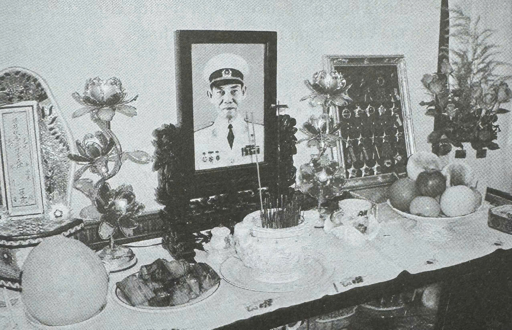

Chuyển trang
DANH MỤC TRANG
📖
1. Giới thiệu đề tài
Đang xem
⏳
2. Bối cảnh lịch sử
Đang xem
👤
3. Tiểu sử (Trước 1957)
Đang xem
⏱️
4. Dòng thời gian (1957–1976)
Đang xem
🕊️
5. Phòng lưu niệm Phạm Xuân Ẩn
Đang xem
ファム・スアン・アン少将（1927 - 2006）
記念室
人民武装勢力英雄

[ファム・スアン・アンの貢献に対する評価]
';">
ファム・スアン・アンの貢献に対する評価
[ファム・スアン・アン少将の肖像]
';">
ファム・スアン・アン少将
(1927 – 2006)
記念棚を開く
✕